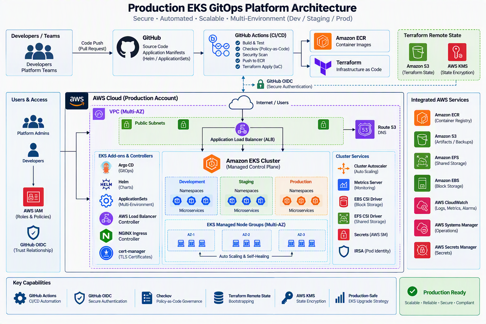

About Me
I am a Cloud Infrastructure and DevSecOps Engineer with expertise in AWS, Kubernetes, Docker, Terraform, GitHub Actions, Linux, and Windows Server administration. Experienced in designing, automating, securing, and maintaining scalable cloud environments using Infrastructure as Code (IaC), CI/CD pipelines, and security best practices. Skilled in system design, infrastructure automation, RBAC implementation, monitoring, troubleshooting, and cloud security.

Projects
Production EKS / GitOps Platform

Designed and implemented a production-grade AWS EKS platform for containerized microservices, leveraging GitOps principles with Argo CD, Helm, and ApplicationSets to automate deployments across Development,Staging, and Production environments. Established strong security, governance, and operational best practices to ensure scalability, reliability, and compliance.
- GitHub Actions CI/CD Automation
- GitHub OIDC for Secure Authentication
- Checkov Policy-as-Code Governance
- Terraform Remote State Bootstrapping
- AWS KMS State Encryption
- Production-Safe EKS Upgrade Strategy
View on GitHub→[Ecr&ArgoCD]
View on GitHub→[fintech-enterprise-gitops-manifest]
Kubernetes CI/CD Pipeline

End‑to‑end CI/CD pipeline that builds, tests, containerizes, and deploys applications to Kubernetes with rolling updates.
- GitHub Actions
- Docker Registry
- Kubernetes Deployments
Infrastructure as Code (Terraform)

Modular Terraform setup for provisioning secure, scalable cloud infrastructure including networking, compute, IAM, and Kubernetes clusters.
- Terraform Modules
- Cloud Networking
- IAM & Security